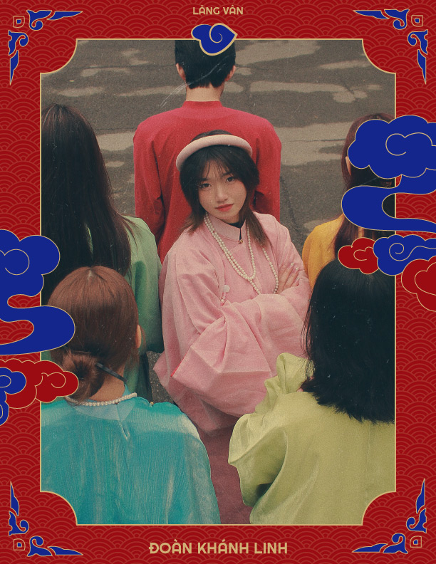

|  |
Một chút xíu về: ________________Đoàn Khánh Linh
|
|---|
"Zâuuu! Xin chào tất cả mọi người, mình là Khánh Linh, Khánh trong Khánh Linh còn Linh là do mẹ mình thích đặt thế. Hiện tại mình đang là sinh viên năm 2 thiếu ngủ ngành Truyền thông đa phương tiện tại PTIT. Mình có một niềm đam mê mãnh liệt với bộ môn Graphic Design và mong muốn được phát triển trong lĩnh vực này. Là một Kim Ngưu tháng 5 chính hiệu, mình thích ăn hơn là nấu, có thể ăn mọi thứ trên đời ngay cả nỗi lo lắng của bạn (nếu được giá). Tuy nhiên mình không thích bị “ăn hành” và bị “ăn phờ ren” đâu nhen! Mình đến với Lăng Vân trong vị trí thiết kế bộ nhận diện và hỗ trợ về mặt hình ảnh. Với tinh thần kế thừa và sáng tạo không ngừng, cùng máu chiến “không thích về nhì”, mình hy vọng rằng sẽ đưa tới cho mọi người những sản phẩm chỉn chu nhất. Vậy nên mọi người hãy yêu thương “Lăng Vân” và ủng hộ cho nhóm mình nha! Mình là Khánh Linh, hẹn gặp lạii"